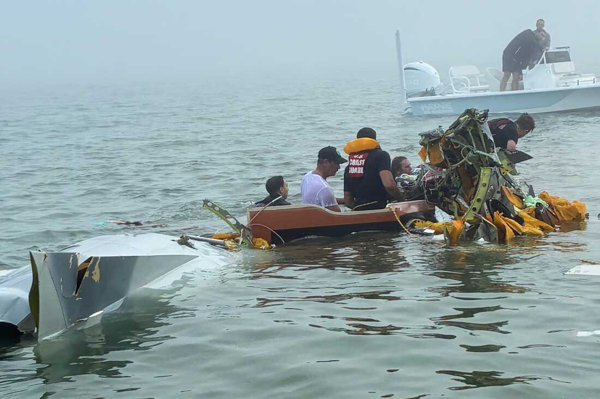

Mexican Navy medical plane with children transported for Michou and Mau Foundation crashes off Texas coast
2025, December 26

Mexican Navy medical plane with children transported for Michou and Mau Foundation crashes off Texas coast
2025, December 26
United States
A Mexican Navy aircraft transporting a pediatric burn patient crashed into a bay near Galveston, Texas on Monday afternoon. At least six people died in this accident, according to authorities report on Tuesday. Mexican President Claudia Sheinbaum stated Tuesday that air traffic control center lost contact with the flight for approximately ten minutes before it went down.There were eight individuals on board: four Navy officers and four civilians, including the child. According to Mexican Navy officials, rescue teams retrieved two survivors from the wreckage. U.S. Coast Guard Petty Officer Luke Baker confirmed that at least five people aboard had died in the accident.
Sheinbaum addressed the crash during a morning press briefing. "My condolences to the families of the sailors who unfortunately died in this accident and to the people who were traveling on board," she said. "What happened is very tragic." Initially, authorities believed the plane had landed safely in Galveston, but later found out it had crashed.
The flight began from Mérida in the Yucatán Peninsula. The journey was arranged by the Michou and Mau Foundation, a nonprofit organization dedicated to transporting Mexican children with severe burns to specialized medical facilities. The organization often sends patients to Shriners Children's Texas in Galveston.
The aircraft, identified as a twin turboprop Beech King Air 350i by the Associated Press and a King Air ANX-1209 by the Mexican Navy via The New York Times, crashed near the causeway connecting Galveston Island to the mainland.
Sky Decker, a yacht captain living near the crash scene, told the Associated Press that he hurried to help by boat, guiding police through dense fog. He discovered a woman trapped beneath parts of the plane, still inside the sunken wreck. "I couldn’t believe. She had maybe 3 inches of air gap to breathe in," Decker said. "And there was jet fuel in there mixed with the water, fumes real bad. She was really fighting for her life." Decker also retrieved a man’s body from the debris.
Weather may have been a factor in the crash. Cameron Batiste of the National Weather Service, noted dense fog, with visibility dropping to about half a mile around 2:30 p.m. on Monday.
The National Transportation Safety Board (NTSB) and the Federal Aviation Administration (FAA) have launched investigations. The NTSB said it may take a week or longer to recover the plane, and a preliminary report is expected in about 30 days. Sheinbaum said that the cause remains under investigation, adding, "Until the black box is recovered and analyzed, it will be impossible to know what caused the crash."
Shriners Children's Texas expressed "profound sadness" regarding the crash in a statement. But they were unable to provide any information about the child’s condition, as the patient had not arrived at the hospital.